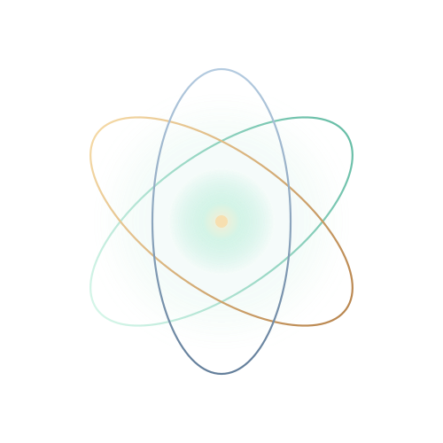
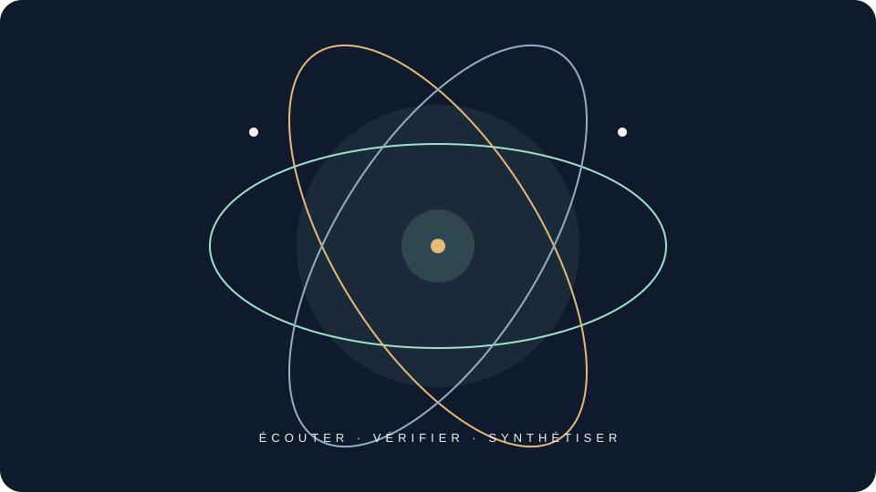

Respecter
Dignité, autonomie, consentement et accessibilité guident la manière de répondre.

KEO UDVI · EBP Lire le documentKEO-UDVI-EBP est un cadre de prompts qui aide à structurer les réponses, expliciter les incertitudes et garder la personne au centre.
Un cadre de travail, pas une certification ni un service d’urgence.
ÉCOUTER VÉRIFIER SYNTHÉTISER
01 / L’intention
Le document KEO décrit une démarche adaptable : comprendre la demande, repérer les enjeux, utiliser les outils réellement accessibles, produire une réponse utile puis en vérifier les limites.
Dignité, autonomie, consentement et accessibilité guident la manière de répondre.
Un fait observé, une interprétation, une hypothèse et une information inconnue ne sont pas interchangeables.
Un outil est déclaré utilisé seulement si son appel et son résultat sont observables.
02 / Le fil de réponse
Le moteur décrit dans le document suit un parcours simple, réévalué à chaque demande.
Demande, contexte, destinataire et format souhaité.
Enjeux, informations manquantes et niveau de prudence utile.
Réponse adaptée, sans inventer de faits ni d’actions externes.
Cohérence, sécurité, provenance et limites décisives.
03 / À garder en tête
Transparence avant tout
KEO ne crée ni mémoire persistante, ni surveillance, ni second modèle, ni connexion à des services externes. Le cadre s’applique uniquement dans le contexte où son texte est effectivement fourni.
En cas de danger immédiat, contactez les secours de votre territoire.
Illustration animée

Explorer la source
Consultez le cadre canonique et ses sections pour retrouver les détails, les routines et les conventions documentaires.
Ouvrir sur GitHub